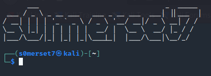

Note: Much of the below information is summarized from Gus Khawaja’s Pluralsight course “Penetration Testing and Ethical Hacking with Kali Linux”. Much credit goes to Gus’s expertise! Check out his blog in the sources and how to get started with Pluralsight
There are two main ways in which you can set up Kali Linux, you can either create a Virtual Machine (VM) and install the Kali Operating System (OS), or you can Single/Dual Boot your computer to have Kali (both of which are 100% free). While both options may seem a bit daunting to newcomers, there are plenty of great tutorials available online:
- VM Option: https://www.nakivo.com/blog/how-to-install-kali-linux-on-virtualbox/
- Single Boot Option: https://www.kali.org/docs/installation/hard-disk-install/
- Dual Boot Option: https://www.kali.org/docs/installation/ (click on one of the three “Dual Booting” links that correspond to your current OS)
What to do Once You’ve Installed Kali
Updating Kali Linux
Kali Linux normally doesn’t auto update, so what we can do is make a simple script that does everything for us when we run it:
sudo apt-get update && sudo apt-get upgrade -y && sudo apt-get dist-upgrade -y
- What this does is first retrieve any new updates to existing systems, follows through with upgrading them, and then upgrades the distributions along with all packets and their dependencies
- The
-yflag automatically answers yes to any pop up questions to save time
- The
- Copy paste the above code into a
.shfile and give the script executable permissions by runningchmod +x file.shin the terminal, wherefile.shis the name of the file you created - Simply
cdto where you stored your file and run./file.shto update your system. Don’t forget to update often!
Useful Tools
There are MANY tools that come preinstalled with your Kali Linux OS, however, there are plenty of tools that can be very helpful to include on your system. Listed below are a couple tools, followed by the terminal command needed to install the tool (these commands assume you are acting as root user. If you get an error message saying you do not have permissions, add sudo to the beginning of the command and enter your password with the prompt). Feel free to check out the corresponding links for more information on the usage of each tool:
- Preload
apt-get install preload- Automatically identifies a users most commonly used applications and preloads binaries and dependencies into memory to provide faster access
- https://www.linux.com/training-tutorials/using-preload-speed-linux/
- BleachBit
apt-get install bleachbit- Frees disk space and improves privacy by freeing the cache, deleting cookies, cleaning internet history, shredding temporary files, deleting logs, and discarding other unnecessary files. Advanced features include shredding files to prevent recovery, and wiping free disk space to hide traces of files than have not been fully deleted
- https://www.bleachbit.org/
- Boot Up Manager
apt-get install bum- Each application that executes during the boot up process slows the system which may impact the usable memory and system performance. Boot Up Manager will disable unnecessary services and applications that are normally enabled during the boot up
- https://www.unixmen.com/manage-startup-services-with-bumboot-up-manager-on-ubuntudebian/
- Gnome-do
apt-get install gnome-do- This package allows you to execute applications from your keyboard
- APT File
apt-get install apt-file- Command line tool that allows you to search within packages of the apt packaging system. This allows you to list the contents of a package without installing or fetching it
- https://wiki.debian.org/apt-file
- Scrub
apt-get install scrub- A secure deletion program that complies with government standards
- https://linux.die.net/man/1/scrub
- Figlet
apt-get install figlet- Tool to customize your terminal console by adding an ascii design of a given word/phrase to the top of you terminal when opened
- https://www.npmjs.com/package/figlet
- To use the tool, open the .bashrc file in the home directory of your user (or .zshrc file depending on if your system uses Bash or Zsh) in the text editor of your choice. Scroll to the very bottom of the file and type
figlet yourMessageHere. Close out of all terminal instances and when you reopen you should see your message at the top!

Configuring SSH
- Kali Linux comes with default SSH key pairs, however it is generally safer to disable the default keys and make a new key pair for security’s sake
- To do this, in the terminal type the following commands:
cd /etc/ssh
mkdir keys_backup_ssh
mv ssh_host_* keys_backup_ssh
dpkg-reconfigure openssh-server
- What this code does is first navigate to where the ssh keys exist on your computer, then creates a directory where we will store the current key pairs just as a backup. Then we move all items in the current directory who’s name starts with “ssh_host” to the newly made backup directory. Finally, we run the last command that generates new keys for us
Using TOR
- To use The Onion Router, we first need to install the TOR package by running
apt-get install tor - Once we have TOR installed, we need to edit our Proxy Chains configuration file
- The proxychains.conf file dictates the number and order of proxies that the system will use on the way to the TOR network
- To do this, open the Proxy Chains config file with the editor of your choice located in /etc/proxychains.conf
- Since there is always a chance that proxy servers may be down/experiencing a lot of traffic, if we keep the default setting requiring a Strict proxy chain (where the exact order and number of proxies we have set must be followed), there is a chance our request will fail. So instead, we want to use the Dynamic proxy chain option which instead will allow for tor to work even if everything isn’t working perfectly. To do this, comment the line that says
strict_chainand uncomment the line that saysdynamic_chainby adding/deleting the# - Finally, we need to add the socks5 proxy by scrolling to the bottom of the file and adding
socks5 127.0.0.1 9050. Then save and close - To use TOR, run
service tor startin the terminal. To make sure it is running, typeservice tor statusand you should get a message confirming TOR is active - Once you’ve confirmed TOR is active, visit a website using a browser of your choice (here I chose Firefox) using the following command in the terminal
proxychains firefox www.whatismyip.com. You can replace the website with whatever you want, but this will allow you to see that your IP address is now in a different location! - When done using TOR, you can turn off the service using
service tor stop


Please share using the links if you enjoyed!